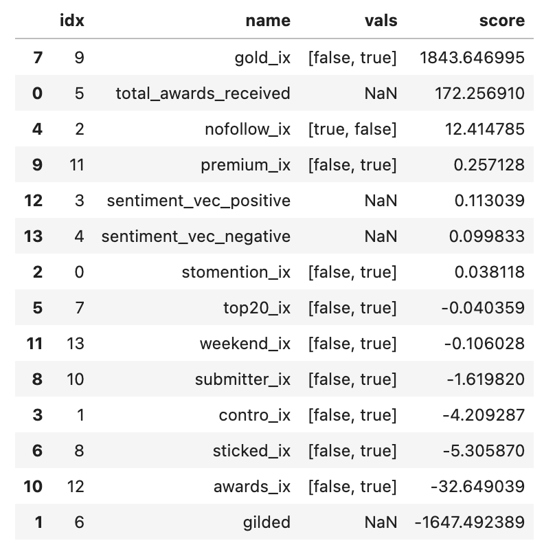
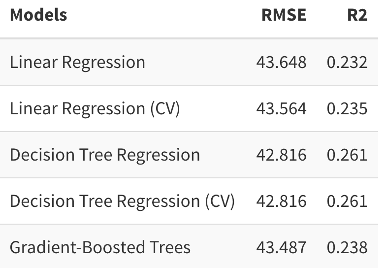
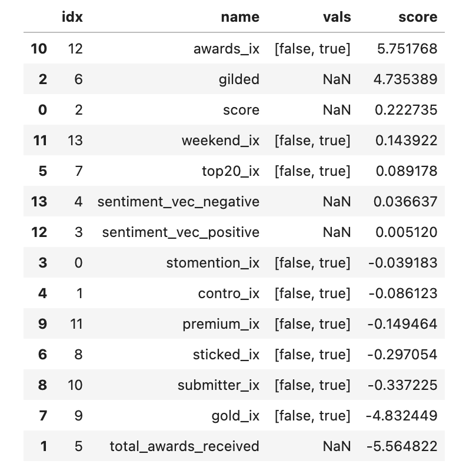
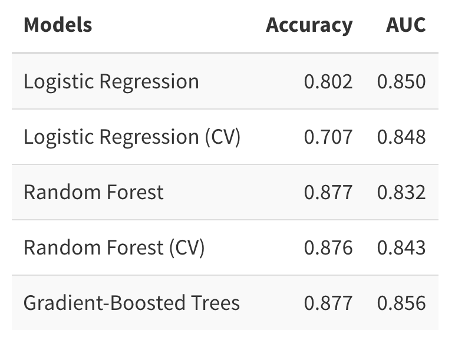

There are many factors that make a comment popular or unpopular, like whether the comment is post by the submitter, whether the comment is positive, and when the comment post. It is interesting to use machine learning methods to answer the questions.
Overall, this part is aimed to explore the factors that affect the score (upvote and downvote) and follows of comments in Reddit. Specifically, one task is to predict the score, another one is to classify the comment based whether the comment is followed.
Technically, for the score prediction task, linear regression, decision tree regression, and gradient-boosted trees model are used. For the classification of follow, logistic regression, random forest, and gradient-boosted trees model are used. All models except gradient-boosted trees are tuned with cross-validation.
From the result, we could find the gilds, awards, follows that the comment received influence the score of comments most. In this task, decision tree regression (CV) performs best (R square = 0.26). For another question, much more factors are significant for whether the comment is followed by others. Besides the factors mentioned above, whether the comment is posted by the submitter, whether the comment is sticked, whether the author is premium, and whether the comment is post on weekend are matters in this question.
First, 3 variables are transformed, including the weekend (0/1, depends on the post date of comments), the account days (2021-06-30 minus the date of author created), sentiment of the comment.
Second, all variables are converted to appropriate type.
Third, NA and duplicate rows are removed.
Finally, cleaned data frame is stored into S3
Put all variables into Linear regression model.
After running the pipeline model, coefficients show that there are 5 variables that affect the comments’ score most:
whether the comment is gilded
how many gilds that the comment received
total awards that the comment received
whether the comment is awarded
whether the comment is posted by the submitter
Therefore, the subset includes these 5 features and score are selected into a new dataset, and split it to train (0.9) and test set (0.1).

5 models including linear regression, linear regression (CV), decision tree regression, decision tree regression (CV) and gradient-boosted trees model are trained. .
For convenience, pipeline models are used in these 5 models.
Specifically, cross-validation is used to do parameters tuning.
The RMSE and R2 of test set is used to evaluate the fitting result.
Also, models are saved into S3 after they are trained for better reuse, especially for cross-validation models.
In these 5 models, Decision Tree Regression (CV) model is the best with r2(0.261) and RMSE (42.816)

Similarly, put all variables into Logistic regression model.
After running the pipeline model, coefficients show that there are 9 variables that affect the comments’ score significantly:
whether the comment is awarded, total awards that the comment received
whether the comment is gilded
how many gilds that the comment received
the score (upvotes) of the comment
whether the comment is posted by the submitter
whether the comment is sticked
whether the author is premium
whether the comment is post on weekend
Therefore, the subset includes these 9 features and score are selected into a new dataset, and split it to train (0.9) and test set (0.1).

5 classifers including logistic regression, logistic regression (CV), random forest, random forest (CV), and gradient-boosted trees model are trained. .
For convenience, pipeline models are used in these 5 models.
Specifically, cross-validation is used to do parameters tuning.
The accuracy and AUC (area under the ROC curve) of test set is used to evaluate the fitting result because the label is imbalanced (more than 1200000 comments that not are followed, but about 550000 comments that are followed)
Also, models are saved into S3 after they are trained for better reuse, especially for cross-validation models.
In these 5 models, Gradient-Boosted Trees (GBT) model is the best with accuracy (0.877) and AUC (0.856)

Data Cleaning and Feature Engineering
Q1: The Prediction of Score
Q2: The Classification of Follow
Copyright © ZhibaoLi, Graduate of Data Science and Analytics, Georgetown University. All rights reserved.